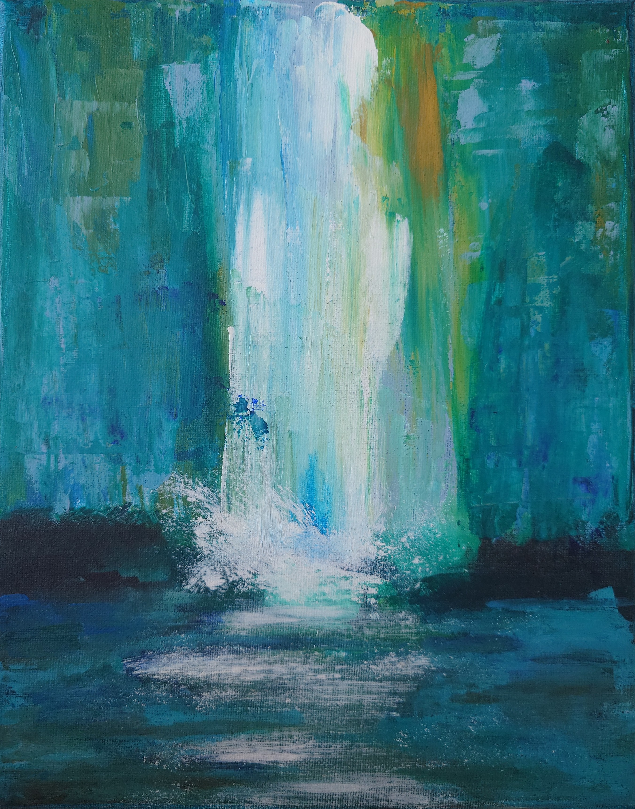

Small Paintings

Paintings

Forest Deer
Made with acrylic paint on linen stretched canvas, medium grain.
50 × 40 cm
December 2024

Lake with Skaters
Made with acrylic paint on cotton stretched canvas, medium grain.
40 × 60 cm
December 2024